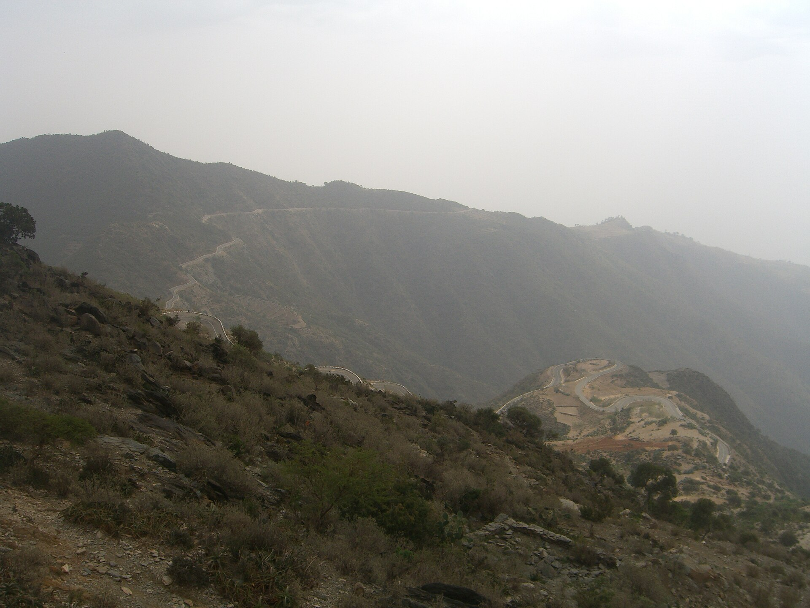

Places to Visit in Eritrea
From highland cities to coastal islands, Eritrea offers unforgettable destinations for every traveller.

Asmara
The capital city is famous for its well-preserved Italian Art Deco architecture, tree-lined boulevards, and vibrant cafe culture. Stroll through the historic centre and visit the Fiat Tagliero building and Asmara Cathedral.

Massawa
This historic port city on the Red Sea features Ottoman-era buildings, coral stone houses, and fresh seafood. Massawa's warm climate and seaside atmosphere make it a favourite stop for visitors.

Dahlak Islands
An archipelago in the Red Sea known for crystal-clear waters, coral reefs, and marine life. Ideal for diving, snorkelling, and peaceful boat trips away from the crowds.

Qohaito
An ancient archaeological site in the southern highlands with pre-Axumite ruins, rock art, and panoramic views. A must-see for history lovers and hikers.

Filfil and Selam
Lush green highlands north of Asmara with cool weather, coffee plantations, and scenic walking trails. A refreshing contrast to Eritrea's coastal heat.
More to Discover
Beyond the main destinations, Eritrea offers more unique experiences for adventurous travellers.
Southern Highlands
Dramatic escarpments, traditional villages, and breathtaking mountain vistas ideal for photography and trekking.
Western Lowlands
Hot, arid landscapes with unique wildlife and cultural encounters with the Kunama and Nara peoples.
Keren
Eritrea's second-largest city, known for its bustling markets, Italian colonial buildings, and nearby camel market.
Green Island
A peaceful island getaway near Massawa with sandy beaches, clear waters, and relaxed seaside vibes.